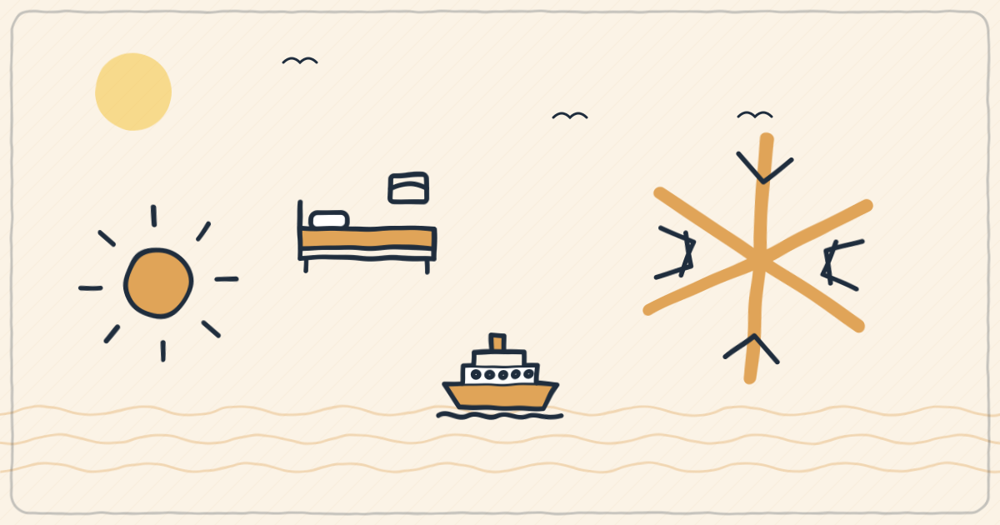

Cruise Cabin Too Hot or Too Cold? Fixes That Work
Cabin thermostats only nudge air from the ship's central plant, within a band the ship controls, so they never feel like a home system. Before reporting a problem, open the ceiling vent, shut the balcony door fully, set the dial to its limit and wait an hour. If nothing changes, log it with guest services that day.

A cruise cabin is cooled and heated by the ship, not by the little panel on your wall. That panel asks the central system for slightly warmer or cooler air, and the system answers within a range the ship has decided on. Most "broken" cabins are not broken at all: a vent is shut, a balcony door is cracked open, or someone expected instant results. Work through the checks below and you will fix most problems yourself in an hour; the rest are a quick job for maintenance.
How the thermostat in a cruise cabin actually works
The ship's air handling plant pushes conditioned air through ducts to every cabin on a deck. Your control adjusts how much of that air arrives and, on many ships, mixes in a little reheated air to warm it. What it cannot do is produce cold beyond what the central plant supplies, or run a heater of its own.
Controls come in three styles:
- A numbered dial or digital readout, in Celsius on most ships and Fahrenheit on some built for the US market. Handy conversions: 20°C is 68°F, 22°C is 72°F, 24°C is 75°F.
- A plain cooler-to-warmer slider with no numbers. Small moves matter; go a quarter turn at a time.
- Separate fan speed buttons on newer ships, which change how fast air moves rather than its temperature.
Whatever the style, allow 30 to 60 minutes before judging the result. Cabins hold heat in their furnishings and walls, and the air changes before the room does.
Why is my cruise cabin so hot?
Match what you notice to the usual cause:
- Warm all afternoon, fine at night. Sun on the balcony glass. Close the curtains while you are out. (Alaska balconies have the opposite problem; the Alaska cabin guide covers which deck stays comfortable.)
- Cooling stops when you open the balcony door. A door sensor cuts the air conditioning. Shut it fully and cooling resumes within minutes.
- Barely any air from the ceiling. Vent louvres closed, or blocked by luggage on the shelf. Open the vent and move the bags.
- Humid, stale air every morning. The balcony door was left ajar overnight. Keep it closed while sleeping.
- Hot, and none of the above helps. An airflow fault in the duct or damper. Report it to guest services.
Caribbean and Mexican Riviera sailings in summer put the cooling under its heaviest load, and cabins on the side facing the afternoon sun fall behind first. Interior cabins, with no glass to heat up, are often the steadiest.
Why is my cruise cabin so cold?
Alaska, Norway and shoulder-season Canada and New England sailings bring the opposite complaint. The system keeps supplying cool air when it is 8°C on the balcony, and the cabin ends up chilly. Turn the control fully to warm, close the vent louvres partway if yours have them, and ask your attendant for an extra blanket or duvet; they carry spares.
Do not bring a heater. Every major line lists them as prohibited, and crew will remove one if they find it. Pack a fleece layer for the cabin on cold-water itineraries, and if you are costing out such a trip, what an Alaska cruise from Vancouver costs covers the budget side.
What to do when the cabin will not change temperature
- Open the ceiling vent fully and clear anything stacked near it.
- Close the balcony door until it clicks, then wait five minutes for the sensor to reset.
- Set the control to its coldest or warmest extreme and leave it for an hour.
- Call guest services or tell your cabin attendant if the cabin is still wrong. Ask for maintenance to check the airflow, and ask them to note it on your account.
- Request a fan as a stopgap if it is running hot. Most ships keep a few to lend.
- Ask about moving if the fault cannot be repaired. On a full sailing there may be nothing free, which is why reporting on day one matters.
Sharing a cabin when you disagree about the temperature
One of you wants 19°C and the other wants 24°C. Settle on the cooler end and give the warm sleeper the extra blanket, because it is far easier to add layers than to cool a hot room. Point the fan, if you have one, at the side of the bed that wants it.
Anyone travelling with a CPAP will notice that ship air is dry. A humidifier chamber and a bottle of distilled water from guest services help, as covered in using a CPAP on a cruise.
Does cabin location affect temperature?
A little. Cabins directly below the pool deck or above the galley can run warmer, and cabins at the far ends of long corridors sometimes get less airflow than those near the plant. Midship cabins on middle decks, surrounded by other cabins, tend to hold the most even temperature, which is one more reason they are the safe choice for first-time cruisers.
Want this checked for your own sailing? A licensed cruise consultant can price it up and answer questions for free, with no obligation.
Ask a cruise expert →Give it an hour, then speak up
Open the vent, shut the door, set the extreme and wait. If the cabin has not moved after an hour, it is a fault, not a feature, and the ship would rather fix it on day one than hear about it in a survey.
Still wondering?
Why does my cruise cabin thermostat not work?
Usually it does, just slowly and within limits. Changes take 30 to 60 minutes, the ship caps how far the setting goes, and an open balcony door or a blocked vent cancels the effect. If the cabin has not shifted after an hour at the extreme setting, report it.
What temperature are cruise ship cabins kept at?
Most ships aim for a comfortable band around 21–23°C (70–74°F) and let the cabin control move a few degrees either side. Hot climates and afternoon sun on a balcony can push a cabin above that; Alaska and Northern Europe can leave it feeling cooler than the number suggests.
Can I bring a fan or heater on a cruise?
Space heaters are banned on virtually every line as a fire risk. Fans depend on the line: small battery or USB fans are usually fine, while corded fans appear on some prohibited lists. Check your line's list before packing, and ask your cabin attendant whether the ship can lend one.